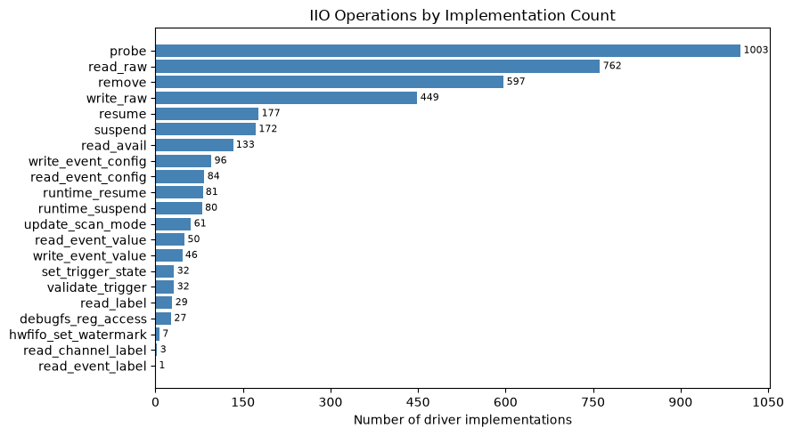
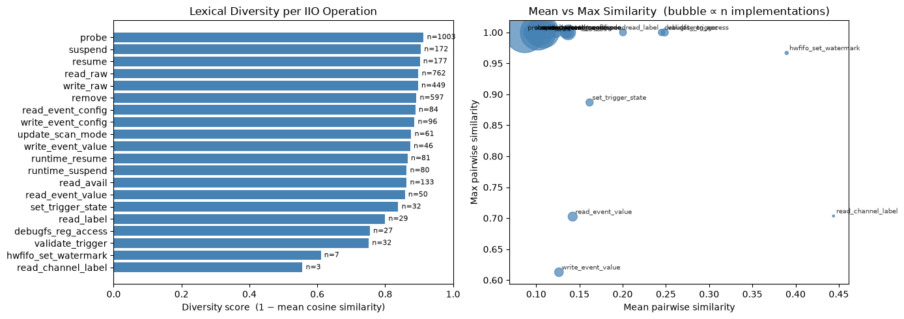
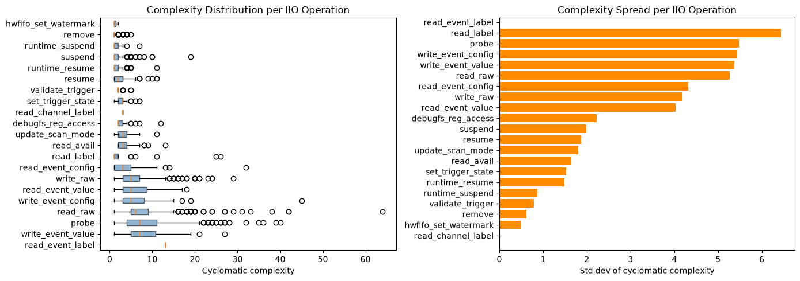
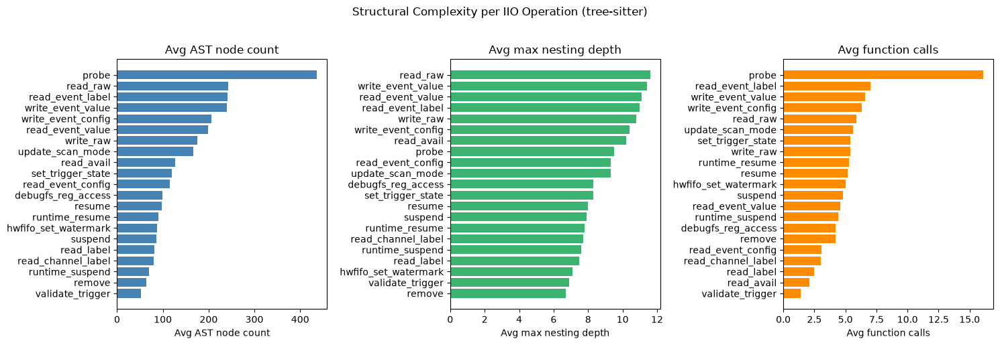
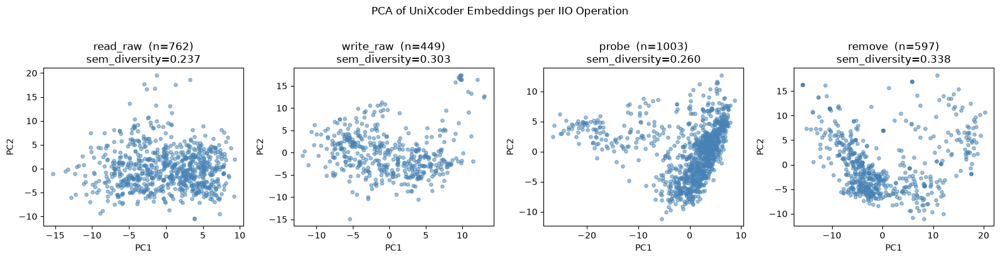
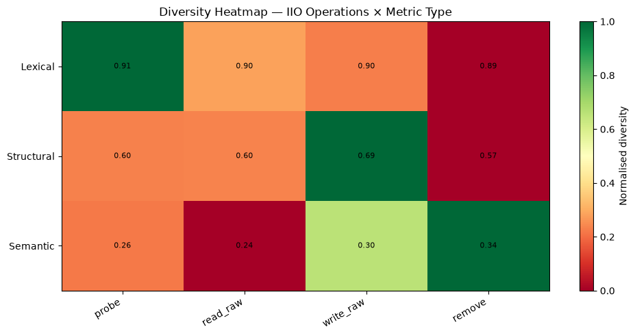

1) Dataset e Limpeza
O dataset enriquecido bruto contém 235.683 registros extraídos de 41.706 patches da mailing list IIO. Para a análise de diversidade, foram aplicados cinco filtros sequenciais:
-
Fonte confiável: manter apenas registros com
fetch_status ∈ {git_blob, new_file}, garantindo que o corpo da função reflita o estado real do arquivo pré-patch; - Deduplicação por revisão: para cada patch que passou por múltiplas versões (v1, v2, v3…), manter apenas a revisão mais recente — a que melhor representa a intenção final do autor;
-
Remoção de macros: excluir símbolos identificados como invocações
de macro (
IIO_DEVICE_ATTR,SIMPLE_DEV_PM_OPSetc.), capturados erroneamente pelo extrator de brace-counting como funções; -
Escopo de caminho: restringir a
drivers/iio/, excluindo arquivos de staging, headers genéricos e subsistemas adjacentes; - Um corpo por (arquivo, função): quando o mesmo par aparece em múltiplos patches limpos, manter o mais recente.
O resultado é um dataset de 16.670 implementações únicas de funções
distribuídas por 1.089 arquivos-fonte e 842 autores.
Desse total, 3.922 funções (23,5%) batem com uma assinatura conhecida
de operação IIO (*_read_raw, *_probe etc.) e formam o núcleo
da análise de similaridade agrupada por tipo de operação.
2) Operações IIO Identificadas

iio_info
encontradas no dataset limpo.
A distribuição é fortemente concentrada nas quatro operações centrais do subsistema:
probe (1.003), read_raw (762), remove (597) e
write_raw (449). Em conjunto, elas representam quase 75% de todas as
implementações mapeadas. As operações de power management (suspend,
resume, runtime_*) formam um segundo tier com 80–180
implementações cada. Operações de cauda longa como hwfifo_set_watermark
(7) e read_channel_label (3) têm amostras insuficientes para conclusões
estatísticas robustas — um ponto a considerar na interpretação das métricas por grupo.
3) Diversidade Léxica (TF-IDF)

Os scores de diversidade léxica são consistentemente altos em todas as operações,
variando de 0,56 a 0,91 (onde 1,0 = vocabulários completamente
distintos). probe é a operação mais lexicamente diversa (0,913, n=1.003),
seguida por suspend/resume (~0,90) e read_raw
(0,898, n=762). A mais uniforme é read_channel_label (0,556), mas com
apenas 3 amostras esse resultado não é conclusivo.
O bubble chart à direita revela uma estrutura mais fina: a maioria
das operações concentra-se no canto superior esquerdo (similaridade média baixa,
similaridade máxima próxima de 1,0) — indicando que, embora o vocabulário médio seja
muito distinto entre pares, existem sempre ao menos duas implementações quase idênticas
em qualquer operação. As exceções notáveis são write_event_value e
read_event_value, que têm tanto a média quanto o máximo de similaridade
mais baixos, sendo as operações mais homogeneamente diversas no léxico.
4) Complexidade Ciclomática

O contraste entre operações é marcante. probe (média CC = 8,2, max = 40)
e read_raw (média = 7,7, max = 64) têm distribuições de cauda muito longa
— o boxplot mostra IQR comprimido mas outliers extremos, evidenciando que a maioria
dos drivers implementa essas operações de forma relativamente simples, mas um subconjunto
tem inicializações e caminhos de leitura excepcionalmente complexos. Na outra ponta,
remove (média CC = 1,3), runtime_suspend (1,5) e
suspend (1,9) são quase sempre boilerplate — o boxplot
colapsa próximo a CC = 1 com pouquíssima variação.
O gráfico de desvio padrão (direita) é o mais revelador para análise
de diversidade: read_label e probe têm os maiores spreads
(~5–6,5), confirmando que são as operações com maior variação de complexidade lógica
entre drivers. remove e hwfifo_set_watermark têm desvios
mínimos — implementações estruturalmente uniformes onde a análise de diversidade tem
pouco a extrair. Há uma correlação moderada entre diversidade léxica
e spread de complexidade (r = 0,47): operações que variam mais em estrutura lógica
também tendem a variar mais em vocabulário, mas a relação não é determinística.
5) Métricas Estruturais (AST via tree-sitter)

A análise via tree-sitter adiciona uma terceira camada que a complexidade ciclomática
não captura. probe domina em tamanho de AST (437 nós em
média) e em chamadas de função (16,1 em média) — reflexo direto do
seu papel como orquestrador de inicialização: alocação de dispositivo IIO, registro
de canais, configuração de IRQ e setup de hardware acontecem todos dentro de um único
probe().
Surpreendentemente, read_raw lidera em profundidade de
aninhamento (11,6 níveis), superando inclusive probe. Isso
reflete a necessidade de tratar múltiplos tipos de canal, caminhos de calibração e
estados de hardware — frequentemente via switch aninhado dentro de
if dentro de outro switch. Já remove
apresenta os menores valores em todas as três dimensões, reforçando sua natureza
de teardown sequencial e quase sem ramificações.
Em termos de diversidade estrutural (coeficiente de variação do
número de nós dentro de cada grupo), as operações de label (read_label,
CV = 1,22) e runtime PM (runtime_resume/suspend, CV ~0,73–0,81) são
as mais heterogêneas — implementadas de formas muito distintas entre drivers.
hwfifo_set_watermark (CV = 0,25) e read_channel_label
(CV = 0,34) são as mais estruturalmente uniformes.
6) Similaridade Semântica (UniXcoder)

A análise semântica via embeddings UniXcoder revela o contraste mais importante do estudo. Enquanto as métricas léxicas apontavam diversidade alta (0,89–0,91), os scores semânticos são sistematicamente baixos:
| Operação | n | Diversidade Léxica | Diversidade Semântica |
|---|---|---|---|
read_raw |
762 | 0,898 | 0,237 |
probe |
1.003 | 0,913 | 0,260 |
write_raw |
449 | 0,897 | 0,303 |
remove |
597 | 0,892 | 0,338 |
A similaridade cosseno média no espaço de embeddings varia de 0,66 a 0,76 — os autores convergem para soluções estruturalmente semelhantes mesmo usando vocabulários completamente diferentes. Os plots PCA tornam isso visível: todas as quatro operações formam nuvens sem subclusters claros, com os pontos distribuídos de forma difusa mas concentrada — sem grupos distintos, sem separação.
remove é a operação semanticamente mais diversa (0,338), o que faz
sentido: a sequência de teardown varia substancialmente dependendo dos recursos
adquiridos no probe. read_raw é a menos diversa (0,237),
sugerindo que o caminho de leitura IIO está suficientemente estabelecido para que
a maioria dos drivers o implemente de forma conceitualmente idêntica, independentemente
do hardware.
7) Síntese — Heatmap de Diversidade

O heatmap sintetiza os três eixos de análise numa única visualização e torna o
paradoxo central explícito. A linha Lexical é uniformemente verde
(0,89–0,91) — todas as quatro operações têm vocabulários altamente distintos entre
implementações. A linha Structural é intermediária (0,57–0,69),
com write_raw sendo a mais estruturalmente diversa. A linha
Semantic é uniformemente vermelha (0,24–0,34) — os embeddings
aprendidos pelo modelo de linguagem de código convergem mesmo onde o léxico diverge.
A leitura por coluna também é informativa: probe tem o maior gap
léxico–semântico (0,91 vs. 0,26), enquanto remove tem o menor gap
(0,89 vs. 0,34) — ou seja, funções de teardown são as que mais preservam diversidade
semântica real, provavelmente porque não há um padrão único consolidado para desfazer
recursos heterogêneos.
8) Conclusão
A evidência combinada das três camadas de métricas aponta para uma conclusão consistente:
implementações de drivers IIO exibem alta diversidade superficial e baixa
diversidade semântica. A interface bem definida do subsistema — os callbacks
do struct iio_info — age como um mecanismo de convergência:
restringe a estrutura lógica das implementações mesmo deixando os detalhes
hardware-específicos completamente livres ao autor do driver.
Isso tem implicações diretas para a tese:
- Para geração de código: um modelo treinado apenas em diversidade léxica irá produzir variações superficiais (identificadores e constantes distintos) sem necessariamente diversificar a estrutura de controle — que é onde a real diversidade de solução reside;
-
Para o Gerador de Soluções: o sinal mais rico está nas operações
com alto spread de complexidade ciclomática e alta CV de AST (
probe,read_raw,read_label) — são as que oferecem mais exemplos de abordagens genuinamente distintas para o mesmo problema; - Para avaliação de diversidade: métricas léxicas sozinhas são enganosas. O heatmap demonstra que diversidade semântica deve ser usada como métrica primária, com léxica e estrutural como complemento.
As próximas etapas incluem aplicar algoritmos de clustering (HDBSCAN, UMAP + DBSCAN)
sobre os embeddings UniXcoder para identificar grupos de implementações semanticamente
similares, e correlacionar a versão do patch (patch_version) com a posição
no espaço semântico como proxy de qualidade.